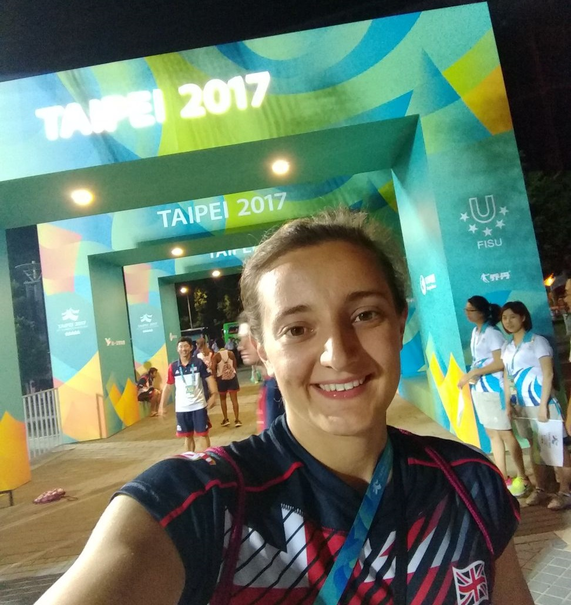
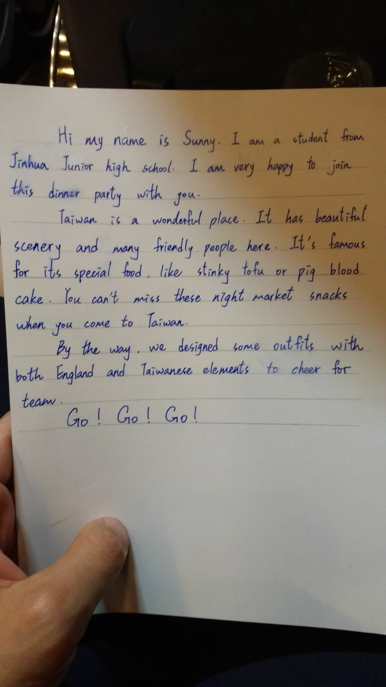
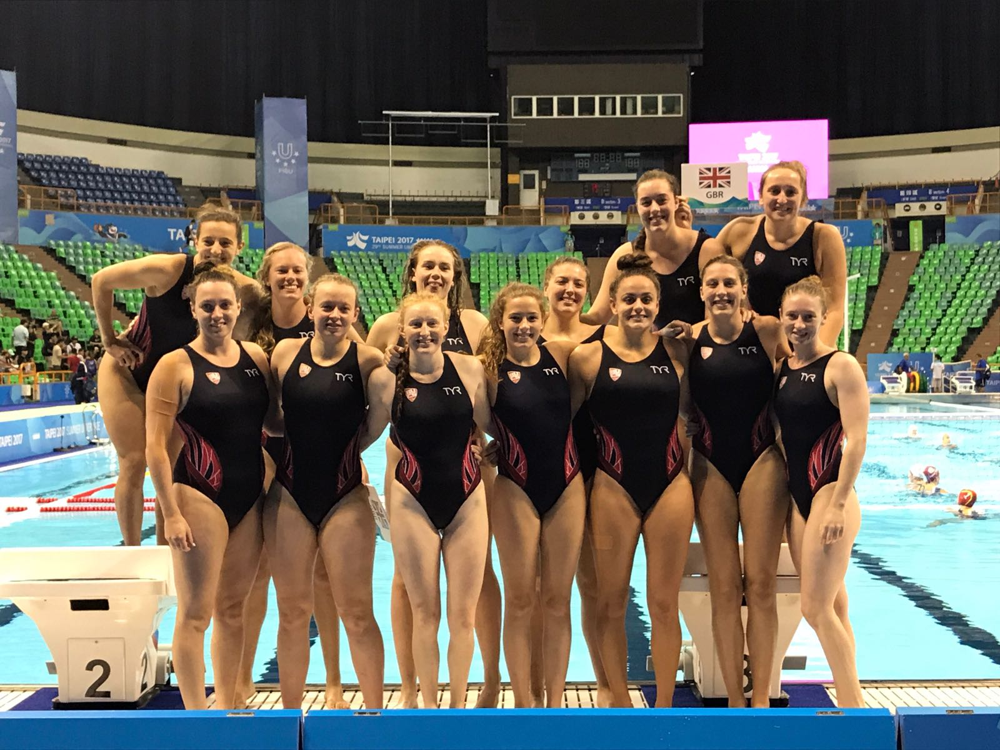

Not sure if one blog post will be long enough to cover all that I am taking from my experience at the Universiade in Taipei as part of the Team GBR Women's Water Polo Team. But here it goes...
The Universiade is an international multi-sport event for university athletes, organised by the International University Sports Federation (FISU). The competition name is a combination of the words "University" and "olympiad", which gives "Universiade" and is often referred to as the World University Games in English. The Universiade is the second largest multi-sport event in the world after the Olympic Games.
Our Universiade kicked off with an evening at the Grand Hotel in Taipei, hosted by the British Consulate. The Grand Hotel was established in 1952 and built to accomodate foreign ambassodors to Taipei. The building is one of the tallest classical Chinese buildings in the world and built on the site of a former shrine from the period of Japanese rule. We were very warmly welcomed by local school children, members of the British consulate and the local media. This encounter lead to our meeting a student from Jinhua Junior high school in Taipei called Sunny and first appearance on Taiwanese TV. Sunny wrote a beautiful letter about Taipei and also gave me a really thoughtful gift, for which I am very grateful. I confess that didn't try either the stinky tofu or pigs blood cake, but I can recommend visiting the night markets and trying all the delicious foods. It was a fabulous evening, celebrating the relationship between Britain and the city of Taipei. However, the night also made me think about the scale of the event and the significance of the sporting competition to Taipei on the international stage. It became a bit overwhelming. Previous to this I had been treating the tournament like I would any other polo match that I play week in week out in the UK. For me, it helped to acknowledge that it would be different, especially outside the pool. A post dinner party pep talk from Adelaide really helped with the pre match nerves.

We were thrown straight in at the deep end. Our first three games were against, Russia, Hungary and Japan the eventual 4th, 2nd and 3rd place finishers of the competition respectively. So needless to say our group was stacked. I came away from those games a little broken, physically and mentally. We had no expectations in those matches, we knew the scores were going to be massive, we were playing against olympic and world medalists, with a team that had been together a little over a month. However prepared we were for the match, the final results were still hard to take. These losses pushed us to the limits as individuals and as a team, but we knew our matches were still yet to come.
Our group the match against New Zealand was our game. The game we knew we were good enough to win and winning this match would give us a better cross over against the Argentineans from the other group. We pulled together as a team and went into the game confident in our game plan. At half time we were three goals up and in control of the game. It was our lack of match experience and confidence as a team that showed in the second half as we ended the game with a 9-9 draw. Although it was frustrating to end the match with a draw, we had done enough to place fifth in the group as we had a better result against Russia, who were our group winners. This set up a cross over with the Argentineans.
The win against Argentina meant that we went into the ninth/tenth play-off against Greece. Greece are known as strong water polo nation. However, we knew if we got our tactics right, we could push this Greek team all the way to the end. But by no means would this be expected of the British team. After the Greeks went ahead in the first half we worked hard to pull the game back to a one goal match. We continued to push and took the match all the way to penalties, with a score of 7-7 at the end of normal time. A great achievement, however we were unable to take advantage of the opportunity and lost 11-10 in the shoot-out.

Finally a massive thank you to all those that have supported us throughout the championship and beyond. The coaches, for believing in us and enabling us to reach our potential. Team managers for keeping us in check. All those at BUCS for their work in oprganising the British team and finally the Athletic Union at the University of Manchester for their support in getting me to the championship.